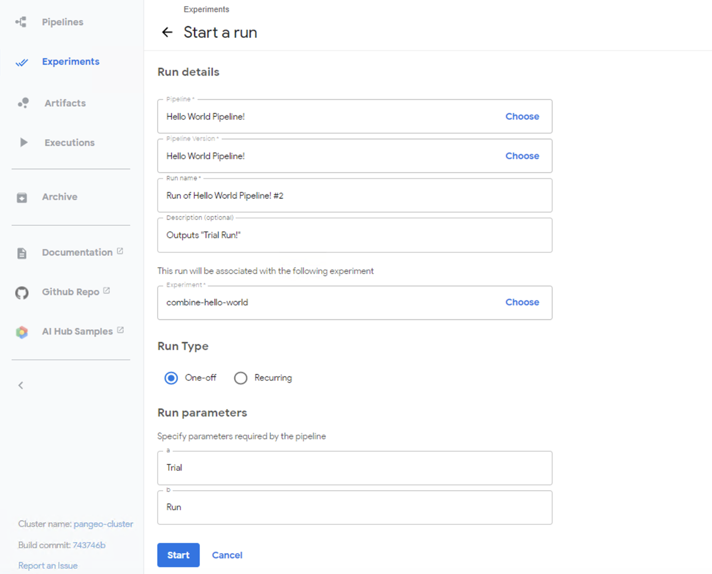
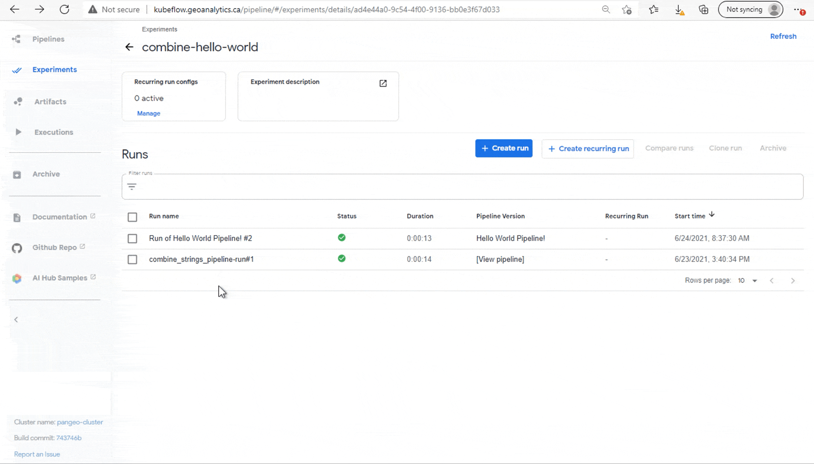
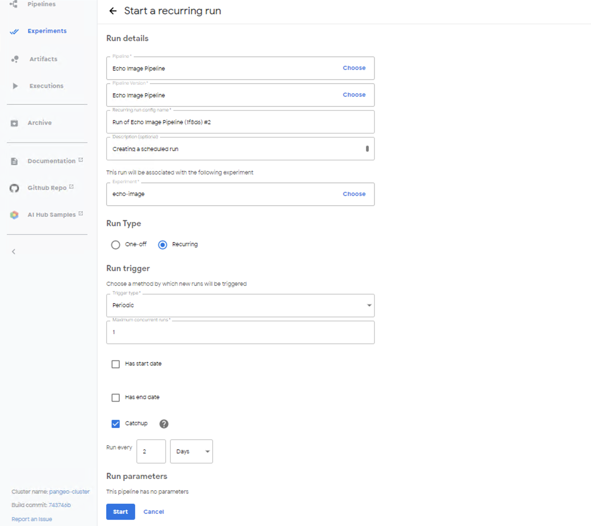
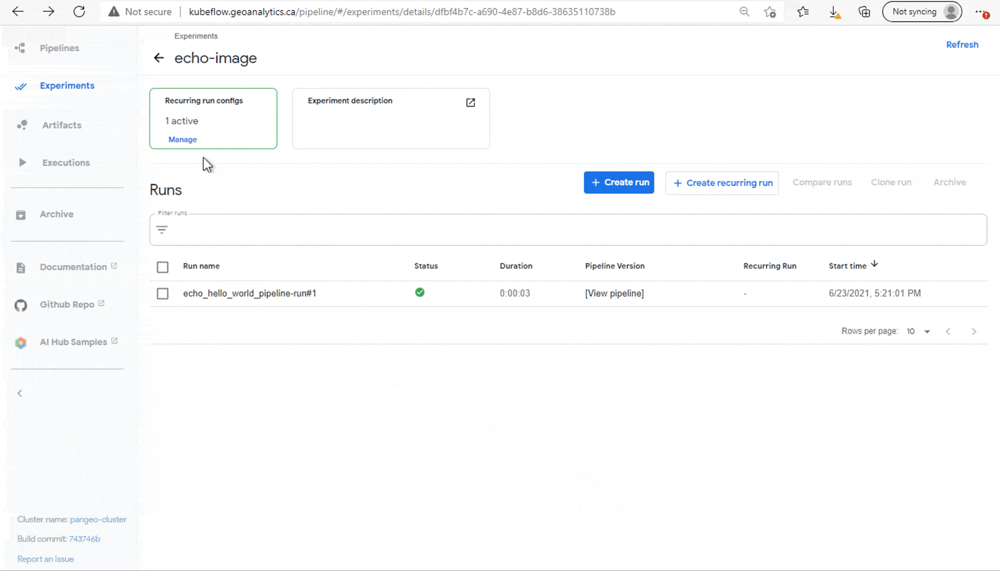

Pipelines#
1. Basics of GEOAnalytics Canada Pipelines#
Kubeflow Pipelines is a platform that provides tools for developing and building portable, scalable machine learning (ML) workflows based on Docker containers.
The Kubeflow Pipelines platform consists of:
A UI for managing and tracking pipelines and their execution
An engine for scheduling a pipeline’s execution
An SDK for defining, building, and deploying pipelines in Python
A pipeline is a representation of a ML workflow containing the parameters required to run the pipeline and the inputs and outputs of each component. Each pipeline component is a self-contained code block, packaged as a Docker image.
In this tutorial notebook, we will build our first Kubeflow Pipelines with Python functions converted to container components and with Docker images. First, run the following command to install all the packages and dependencies required for this tutorial. The requirements.txt file contains the Kubeflow Pipelines SDK and lxml (a Python library which allows for easy handling of XML and HTML files, and can also be used for web scraping).
[ ]:
! pip install -r data/requirements.txt
2. Building Pipelines in Jupyterhub#
In this section we will connect to the GEOAnalytics Kubeflow Client where our Pipeline will be uploaded, and create, compile, and run a simple ‘Hello World!’ pipeline.
A regular pattern for building pipelines in Kubeflow Pipelines is:
Define components for each task
Stitch the components in a
@dsl.pipelinedecorated functionCompile the pipeline, upload the YAML file, and run the pipeline.
This pattern lets you define portable components that can be individually tested before combining them into a full pipeline.
Important Note: The Kubeflow platform provides Jupyter Notebook Servers for using the SDK and pipeline execution, but please DO NOT create a pipeline from these server notebooks.
2.1 Connect to GEOAnalytics Pipeline Client¶#
The first step is to get connected with the the Kubeflow Client in GEOAnalytics Canada.
[2]:
### GEOAnalyticsKubeflowClient
import requests
import kfp
import json
import logging
import getpass
from lxml import html
#from auth_providers.DexProvider import DexProvider
class GEOAnalyticsKubeflowClient:
def __init__(self, username, password, auth_provider, namespace=None):
self.logger = None
self._initialize_logger()
self.client = None
self.namespace = username if namespace is None else namespace
self._authenticate(username, password, auth_provider)
self._validate_client_connection()
def _initialize_logger(self):
logging.basicConfig(format='%(asctime)s %(levelname)s (%(name)s): %(message)s', level=logging.INFO, datefmt='%Y-%m-%d %H:%M:%S')
self.logger = logging.getLogger("GEOAnalyticsKubeflowClient")
# https://github.com/kubeflow/kfctl/issues/140#issuecomment-719894529
def _authenticate(self, username, password, auth_provider):
session = requests.Session()
response = session.get(auth_provider.host)
headers = {
"Content-Type": "application/x-www-form-urlencoded",
}
data = auth_provider.get_auth_data_dict(username, password)
post_url = auth_provider.get_auth_post_url(response)
session.post(post_url, headers=headers, data=data)
try:
session_cookie = session.cookies.get_dict()["authservice_session"]
except Exception as e:
message = "invalid host or credentials"
self.logger.error(message)
raise Exception(message) from None
self.client = kfp.Client(
host=f"{auth_provider.host}/pipeline",
cookies=f"authservice_session={session_cookie}",
namespace=self.namespace,
)
def _validate_client_connection(self):
if self.client.list_pipelines().total_size > 0:
self.logger.info("successfully authenticated with kubeflow")
else:
message = "unable to validate kubeflow client connection. listing pipelines failed."
self.logger.error(message)
raise Exception(message)
[3]:
class DexProvider:
def __init__(self, host):
self.host = host
self.name = "dex"
def get_auth_data_dict(self, username, password):
return {"login": username, "password": password}
def get_auth_post_url(self, initial_response):
return initial_response.url
def get_provider_name(self):
return self.name
The following cell block takes in the URL to the GEOAnalytics Kubeflow server as the provider and requires you to enter your GEOAnalytics Canada username and password to gain authentication.
[4]:
provider = DexProvider("http://kubeflow.geoanalytics.ca")
kubeflow_client = GEOAnalyticsKubeflowClient(input("Username: "), getpass.getpass(), provider)
Username: asaini
············
2021-06-25 21:54:16 INFO (GEOAnalyticsKubeflowClient): successfully authenticated with kubeflow
Now that we are authenticated, let’s build our pipelines. There are two ways components of a pipeline can be generated: Using python functions or using docker images. We will create two pipelines experimenting with both these methods.
2.2 Building Pipelines through Python Function Based Components#
Define a standard python function: For our example, the function will combine two separate strings together. The function should not use any code declared outside of the function definition and helper function must be declared within the function. The input and output data type should also be explicitly declared.
[5]:
import kfp
import kfp.dsl as dsl
[6]:
# Combine two strings together
def combine(a: str, b: str) -> str:
print(a + b)
return a + b
Wrap the function in a Kubeflow lightweight component: the Kubeflow Python SDK allows you to build lightweight components by defining python functions and converting them using
kfp.components.create_component_from_func(<python function>). Specifying a custom Docker container image can be provided as a parameter of this function. The default base image is python3.7.
[7]:
combine_op = kfp.components.create_component_from_func(combine) # default base_image is python3.7
Build a Kubeflow Pipeline using the component: You can use the component created above in a pipeline. The parameters of
@dsl.pipelinedefine the metadata of the pipeline. The combine_strings_pipeline has a decorator function with the goal of printing “Hello World!” as the final result.
[8]:
@dsl.pipeline(
name='Hello World pipeline',
description='An easy example pipeline that combines strings together to create the Hello World phrase.'
)
def combine_strings_pipeline(a='Hello', b='World'):
# Passing in the first pipeline parameter ('Hello') and a space to be combined by the `combine_op` function.
add_space = combine_op(a, ' ')
# Passes an output reference from `add_space` and the next pipeline parameter ('World')
combine_words = combine_op(add_space.output, b)
# Adding an exclamation to the output reference from `combine_words`
add_exclamation = combine_op(combine_words.output, '!')
Compiling the Kubeflow Pipeline: Here we compile the pipeline function into a YAML file that Kubeflow Pipelines can use. A pipeline name, and the pipeline function to be processed are inputs for the compiler.
[9]:
# COMPILE PIPELINE #
pipeline_name = "Hello World Pipeline!"
pipeline_func = combine_strings_pipeline
pipeline_filename = pipeline_func.__name__ + '.pipeline.yaml'
kfp.compiler.Compiler().compile(pipeline_func, pipeline_filename)
[10]:
arguments = {'a': 'Hello', 'b': 'World'} # pipeline argument values
Run the experiments: Kubeflow Pipelines lets you group pipeline runs by Experiments. Experiments are workspaces where you can try different configurations of your pipelines. You can use experiments to organize your runs into logical groups.
In this code block below, we create an experiment with the name “combine-hello-world” and label the run iteration manually. The
.run_pipeline(<parameters>)function runs our specifc pipeline, outputting the hyperlinks to the Experiment and Run details.
[11]:
# If the experiment under the given name already exists - get it's ID, else - create a new experiment
try:
experiment_id = kubeflow_client.client.get_experiment("combine-hello-world")
except:
experiment = kubeflow_client.client.create_experiment("combine-hello-world")
run_name = pipeline_func.__name__ + '-run#1'
run_result = kubeflow_client.client.run_pipeline(experiment.id, run_name, pipeline_filename, arguments)
2021-06-25 21:54:17 INFO (root): Creating experiment combine-hello-world.
Upload to the Kubeflow Pipelines UI: After developing your pipeline,the pipeline can be shared on the Kubeflow Pipelines UI.
[12]:
combine_hw_pipeline = kubeflow_client.client.upload_pipeline(pipeline_filename, pipeline_name, "'Hello World!' created by the combine_strings pipeline!")
[13]:
combine_hw_pipeline
[13]:
{'created_at': datetime.datetime(2021, 6, 25, 21, 54, 17, tzinfo=tzlocal()),
'default_version': {'code_source_url': None,
'created_at': datetime.datetime(2021, 6, 25, 21, 54, 17, tzinfo=tzlocal()),
'id': '968ad52f-71a0-4109-b72f-e06740c4388e',
'name': 'Hello World Pipeline!',
'package_url': None,
'parameters': [{'name': 'a', 'value': 'Hello'},
{'name': 'b', 'value': 'World'}],
'resource_references': [{'key': {'id': '968ad52f-71a0-4109-b72f-e06740c4388e',
'type': 'PIPELINE'},
'name': None,
'relationship': 'OWNER'}]},
'description': "'Hello World!' created by the combine_strings pipeline!",
'error': None,
'id': '968ad52f-71a0-4109-b72f-e06740c4388e',
'name': 'Hello World Pipeline!',
'parameters': [{'name': 'a', 'value': 'Hello'},
{'name': 'b', 'value': 'World'}],
'url': None}
2.3 Building Pipelines by Docker Images#
Now that we have seen how lightweight containers are used in pipelines, we will explore how to build a pipeline using a docker container image. When Kubeflow Pipelines executes a component, a container image is started in a Kubernetes Pod and your component’s inputs are passed in as command-line arguments.
Before we can build our pipeline, let’s get our docker image ready for use. For our example, we will be using ‘library/bash:4.4.23’ image, publicly available on DockerHub. Using the same techniques from the Gitlab tutorial notebook, push this image to a private container registry.
Hint: Rename the image to
registry.geoanalytics.ca/<username>/bash-library
Now let’s talk run the cell below to create an echo operation to be called within our pipeline. This function will return an operation that runs an image. dsl.ContainerOp() takes in multiple parameters, but for our example we will focus on only these four:
name– the name of the operation, which is ‘echo’ in this case.image– the name of our container image.command– the command to run in the container. ‘sh’ invokes the default shell as interpreter and the ‘-c’ flag means execute the following command as interpreted by this program.arguments– the arguments of the command. At container run time the argument will beecho "hello world".
[14]:
def echo_op():
return dsl.ContainerOp(
name='echo',
image='registry.geoanalytics.ca/examples/bash-library',
command=['sh', '-c'],
arguments=['echo "hello world"']
)
This python function directly returns a container operation and can be used in the pipeline. This means in contrast to the previous Python function (combine_op), there is no need to wrap the function as a component for it be processed in a pipeline.
The function below builds a Kubeflow Pipeline using the echo operation, similar to the lightweight function pipeline. The pipeline function calls our echo component as the main task. The image to be used exists in a private container registry which requires additional authentication steps. The dsl.get_pipeline_conf() allows configuration of the pipeline and uses the .set_image_pull_secrets(...) to authenticate the docker image using the secret name “regcredgeoanalytics.”
[15]:
from kubernetes import client
@dsl.pipeline(
name='Echo Image pipeline',
description='An example pipeline that echos "hello world" in the container image.'
)
def echo_hello_world_pipeline():
echo_task = echo_op()
dsl.get_pipeline_conf().set_image_pull_secrets([client.V1LocalObjectReference(name="regcredgeoanalytics")]) # access to your registry
Compile, run, and upload your pipeline!
[16]:
# COMPILE PIPELINE #
pipeline_name = "Echo Image Pipeline"
pipeline_func = echo_hello_world_pipeline
pipeline_filename = pipeline_func.__name__ + '.pipeline.yaml'
kfp.compiler.Compiler().compile(pipeline_func, pipeline_filename)
/srv/conda/envs/notebook/lib/python3.8/site-packages/kfp/dsl/_container_op.py:1021: FutureWarning: Please create reusable components instead of constructing ContainerOp instances directly. Reusable components are shareable, portable and have compatibility and support guarantees. Please see the documentation: https://www.kubeflow.org/docs/pipelines/sdk/component-development/#writing-your-component-definition-file The components can be created manually (or, in case of python, using kfp.components.create_component_from_func or func_to_container_op) and then loaded using kfp.components.load_component_from_file, load_component_from_uri or load_component_from_text: https://kubeflow-pipelines.readthedocs.io/en/stable/source/kfp.components.html#kfp.components.load_component_from_file
warnings.warn(
[17]:
# If the experiment under the given name already exists - get it's ID, else - create a new experiment
try:
experiment_id = kubeflow_client.client.get_experiment("echo-image")
except:
experiment = kubeflow_client.client.create_experiment("echo-image")
# RUN THE PIPELINE #
run_name = pipeline_func.__name__ + '-run#1'
arguments = {'arg': 'echo "hello world"'} # passing in the arguments
run_result = kubeflow_client.client.run_pipeline(experiment.id, run_name, pipeline_filename)
2021-06-25 21:54:17 INFO (root): Creating experiment echo-image.
[18]:
echo_pipeline = kubeflow_client.client.upload_pipeline(pipeline_filename, pipeline_name, "ECHO IMAGE PIPELINE")
3. Exploring the GEOAnalytics Pipeline UI#
3.1 Kubeflow Pipelines and Experiments#
The central Kubeflow Dashboard can be accessed from the main GEOAnalytics Canada page by clicking on Kubeflow to launch. 
Now you will have access to the Kubeflow User Interface (UI).
On the left sidebar, click on the Pipelines tab which will lead to the main workspace for Kubeflow Pipelines UI. On the left panel in this section, there are multiple tabs, but for this tutorial we will focus on only the Pipelines and Experiments tab. The Pipelines tab leads you to all the existing pipelines you have access to and the option to upload a new pipeline. And the Experiments tab displays all the experients and the runs of each experiment. You can create runs, compare existing runs, or even clone the runs.
You are welcome to experiment with running pipelines to get a better feel for their execution and the capabilities of the Pipelines UI.
3.2 Analyzing the Hello World Pipeline#
Under the Pipelines tab, you should see the newly built “Hello World Example Pipeline” at the top of the list of pipelines. There are other Tutorial and Demo pipelines preconfigured by Kubeflow for you to experiment with.
To invoke a specific pipeline, simply click it which will bring up Pipeline’s view as shown in the GIF below.

Within this pipeline there is a graph representing the runtime execution of the pipeline, with edges indicating parent/child relationships between the steps (nodes). Clicking on a node will give information about that step, such as the input parameter, the output result, arguments, internal commands to execute that step, and the volume mounts.
Notebook and the pipeline run independently, so in case the notebook crashes, the experiment will continue running once executed.
3.3 Analyzing the Docker Image Pipeline#
Take the same steps to view the information about our Echo Image Pipeline. In the graph there is only one node, “echo.” As you can note, the arguments, commands, at the image are the same ones we specified in the ContainerOp.
There is also another tab next to Graph, called YAML. This will show our pipeline filename we created when the pipeline was compiled.
3.4 Create a New Run through the UI#
While you can create a run through Jupyter notebooks, it can also be done directly through the UI if the pipeline is already uploaded. The image below shows the Kubeflow Pipelines UI for starting a run of the “Hello World Pipeline”. To run the pipeline, click the “Create Run” button and fill in the run details on the screen.
Filling in the Run Details:
The Pipeline and Pipeline Version should already be set to the current pipeline, “Hello World Pipeline!”
The Run name can be set to anything you prefer, identifying the unique run.
The Description is an option to describe the details of the current run.
The Experiment to be associated with the run must be selected from the list of existing experiments, in our case it should be the “combine-hello-world”.
There are two different types of Runs, we will discuss these in the next part. For now, select “One-off” which executes the pipeline only once.
Now since we specified Parameters in our pipeline function, enter any two words in place of
aandb.

After these sections have been filled in, select the “Start” to execute the run which will take a few seconds (or minutes depending on the pipeline). When the Status updates to a green checkmark it indicates the run was successfully executed. Click on the run to explore the details of the run.

3.5 Running Pipelines on Schedule#
All our previous runs have been done manually, which is not ideal for some scenarios. Recurring runs are repeatable runs of a pipeline, very helpful if the pipeline is expected to run for a long period of time and is triggered to run frequently.
Let’s create a Recurring run on our “Echo Image Pipeline.” Fill in the details as shown in the screenshot below. Now you can create a periodic run by selecting a run type of “Recurring”, then choosing “Periodic” as the trigger type. Period runs specify how often to run a pipeline. In this example we are setting a pipeline to run every second day. Once you start the run, it is executed immediately and then executed with the defined frequency (of 2 days).

From the “echo-image” experiment, you will see recurring run active, with the option to enable or disable the schedule.
If you enable a recurring run for this example notebook, make sure to disable the run.

3.6 Terminating Runs#
In the case where the run takes a while to execute and you want to stop the run, it can be terminated through the UI. Once you click on the ongoing run, you will see a “Terminate” button in the top right of the page. This will immediately terminate the execution of that run, but it will not delete the record of the run.
The next section will show how to delete runs, experiments, and pipelines in a Jupyter notebook.
4. Deleting Runs, Experiments, and Pipelines#
To keep your environment clean, let’s delete the runs, experiments, and pipelines we created in this notebook. (You can choose to keep them if you prefer!)
4.1 Delete all the runs#
The following code blocks show how to delete runs of a particular experiments.
We use .get_experiment(<name>) to get the experiment id which will be used to find all the runs within this experiment. Let’s start by getting the experiment information for the “echo-image” and the “combine-hello-world image” experiments.
[19]:
echo_experiment = kubeflow_client.client.get_experiment(experiment_name='echo-image')
echo_experiment
[19]:
{'created_at': datetime.datetime(2021, 6, 25, 21, 54, 17, tzinfo=tzlocal()),
'description': None,
'id': '7ab33a7e-97d6-4435-9b46-59d97b13e840',
'name': 'echo-image',
'resource_references': None,
'storage_state': None}
[20]:
combine_hw_experiment = kubeflow_client.client.get_experiment(experiment_name='combine-hello-world')
combine_hw_experiment
[20]:
{'created_at': datetime.datetime(2021, 6, 25, 21, 54, 17, tzinfo=tzlocal()),
'description': None,
'id': '5a34b033-4187-44f0-b851-10498d3b42ea',
'name': 'combine-hello-world',
'resource_references': None,
'storage_state': None}
Now that we have the the information for our experiments in a dictionary, we can use the ‘id’ key to delete the experiments’ runs. The cells below collects information for all the runs of each experiment, and iteratively deletes each run.
[21]:
combine_hw_runs = kubeflow_client.client.list_runs(experiment_id=combine_hw_experiment.id)
# Delete all runs from the "combine-hello-world" experiment
for i in range(len(combine_hw_runs.runs)):
print(combine_hw_runs.runs[i].id)
kubeflow_client.client.runs.delete_run(combine_hw_runs.runs[i].id)
f0617ebf-64e1-4c7e-9447-c421f46f29b8
[22]:
echo_runs = kubeflow_client.client.list_runs(experiment_id=echo_experiment.id)
# Delete all runs from the "combine-hello-world" experiment
for i in range(len(echo_runs.runs)):
print(echo_runs.runs[i].id)
kubeflow_client.client.runs.delete_run(echo_runs.runs[i].id)
67833d3e-0926-41f4-91d3-9683d496925e
Now, if you head over to the Kubeflow Pipeline UI and take a look at the experiments, there should be no runs available anymore.
4.2 Delete the experiments#
Since the runs are deleted, we can safely delete the experiments without worrying about unexpected behaviors.
We already have the experiment IDs which will be the parameter input for the function .experiments.delete_experiments(<experiment_id>). Once you have run the cell below, refresh your Experiments page on the UI to see these experiments disappear from the list.
[23]:
kubeflow_client.client.experiments.delete_experiment(combine_hw_experiment.id) # deletes combine-hello-world experiment
kubeflow_client.client.experiments.delete_experiment(echo_experiment.id) # deletes echo-image experiment
[23]:
{}
4.3 Delete the pipelines#
Pipelines can be deleted through Jupyter and through the Kubeflow Pipeline UI!
To delete through the UI, simply tick off the boxes next to the pipelines and select the Delete button to delete them.
There are different steps for deleting through a Jupyter notebook. When we uploaded the combine_strings pipeline and echo_image pipeline, we assigned the information of the pipelines to variables combine_hw_pipeline and echo_pipeline, respectively. We will use the ‘id’ keys from their pipeline information dictionaries (similar to how the experiment IDs were retrieved) as the parameter for identifying the pipelines we wish to delete, using the function
delete_pipeline(<pipeline_id>).
[24]:
kubeflow_client.client.delete_pipeline(combine_hw_pipeline.id)
kubeflow_client.client.delete_pipeline(echo_pipeline.id)
[24]:
{}